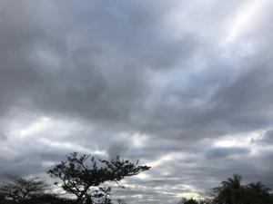
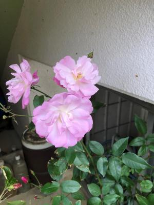

うるがいの話 ある日
最新: 一身上の都合【うるがいの話 ある日】とは 一日だけのプログです
『うるがいの話』の最新一日だけのプログで、通信料が少なく経済的だ。カニの画像をクリックすると全ての日付が載る『うるがいの話』サイトを表示します
|
|
【うるがいの話】 うるがい(ｳﾙｶﾞｲ urugai)とは、『もずくがに』の名前でとても大きくなります。 |
|---|---|
|
|
【カミマヤーの話】 猫のことを方言でマヤーといいます。カミマヤー（kamimayaa）とは、神の猫のことです。 |
|
【たながぁの音楽】 たながぁ（ﾀﾅｶﾞｰ tanagaa）とは手長えびのことで、何種類かあり大きいのは車 エビぐらいになります。 |

|
【ぶながぁの話】 ぶながぁ(ﾌﾞﾅｶﾞｰ bunagaa)とは、赤い髪の毛、赤い身体、そして身長は１ｍ２０ｃｍ ぐらい、川の蟹を食べているの目撃された。場所は沖縄県国頭郡大宜味村のと ある村僕の隣近所に住んでいる爺さんから、聞いた話です。 |
|
|
【ギーマの話】 ギーマ(giima)とは、山原の里山に咲くスズランに似た、 花を付けます。実は食べられます、 気が付くと口の周りが紫になっています。 |
2023年02月08日 (水）一身上の都合
17:26

私事で大変恐縮ですが、一身上の都合により令和５年３月３１日をもちまして
退職する事になりました。３月以降前任が復帰するまでの間、今まで土曜の販
売店スタッフより点検や修理のアフターフォローを小野なってまいります。度
重なる担当変更でご迷惑をおかけして申し訳ございません。今後とも変わらぬ
ご愛顧を賜りますよう、宜しくお願い致します。
おお、退職するんだ・・・・、３月は２度ほど販売店によるが、どう対応しよ
う。確かに３年前から、４名ほど担当が変わった。とりあえず、携帯の連絡先
の削除は３月３１日の削除しよう。しかし、マスクで顔が分からないままか。

コドモも、７月に退職する事になってなっていて４月までの勤務、５月、６月
は有給休暇の消化、世界一周すると意気込んでいる。もう一人の子供は、先月
までは契約満期の２月で辞めるかも言っていたが、辞める原因となっている部
署の作業のことを素直に話すと、別の部署に配置かえをしてくれたらしい、し
ばらくはその部署で様子をみようと言っている。
１７時２０分 ビットコインの総資産 ￥８、８００（↑１９）